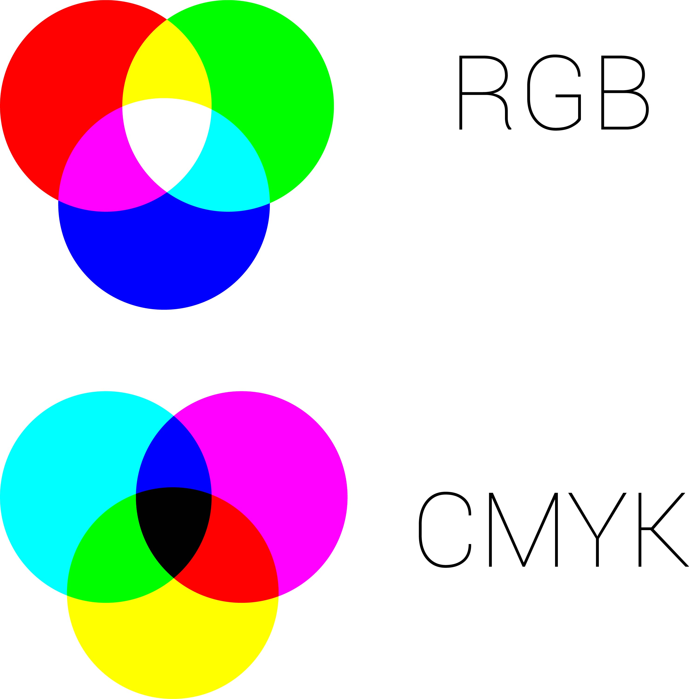
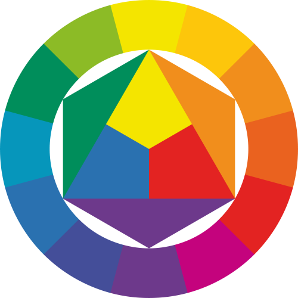
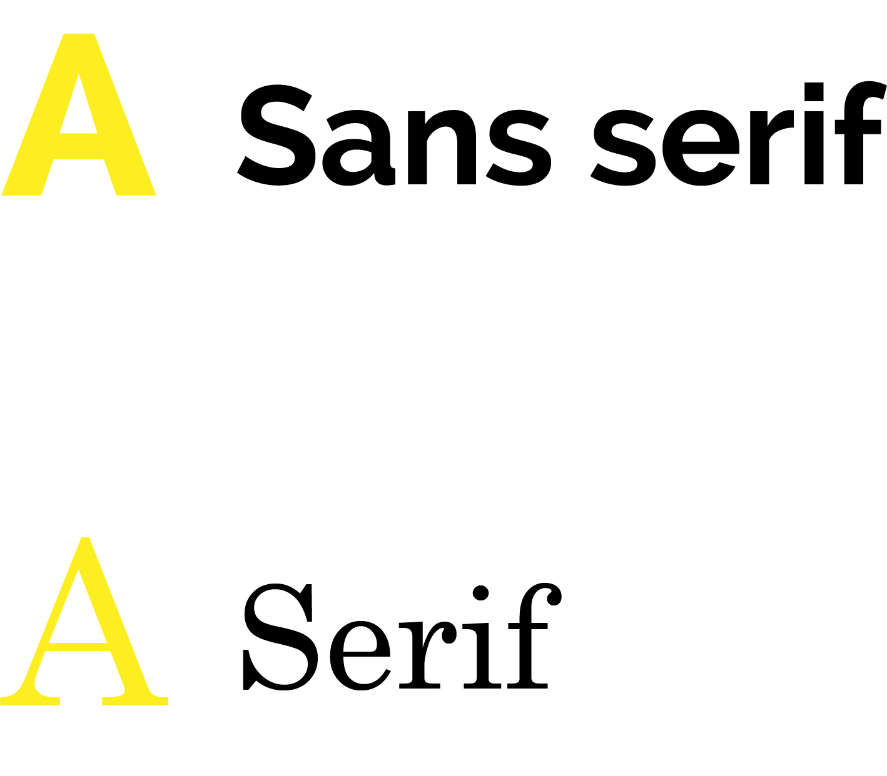
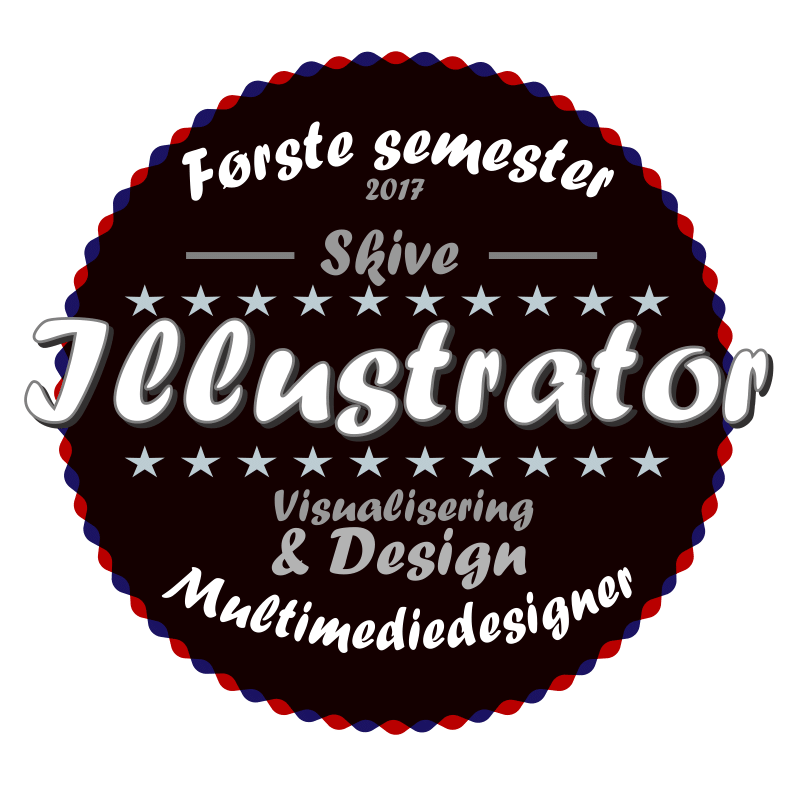
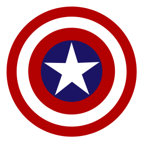
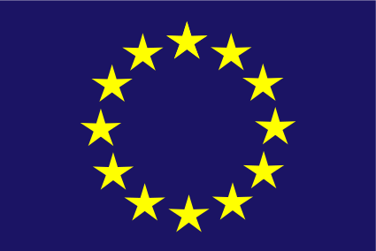

Portfolio 2017
Visualisering & design
Farveteori
RGB & CMYK
Kilde: Rikke S. Kofoed
RGB og CMYK er de to farvesystemer vi arbejder med.
RGB står for Red Green Blue og er det farvesystem man arbejder med, når man skal designe noget til en skærm.
RGB er et additivt farvesystem, hvilket vil sige at jo mere farve vi tilføjer jo lysere bliver det og til sidst bliver det helt hvidt.
Det kan hjælpe at tænke på RGB som et sæt af tre små lommelygter, hvor man kan skrue på lysstyrken på hver farve.
Hvis vi tilføjer mere farve, skruer vi op for lommelygten, og hvis vi trækker farve fra skruer vi ned for lommelygten.
CMYK står for Cyan Magenta Yellow Key Black, og er det farvesystem man arbejder med, når man designer noget til print.
CMYK er et subtraktivt farvesystem, hvilket er det modsatte af RGB og det vil altså sige, at jo mere farve man tilføjer jo mørkere bliver det.
Cyan, Magenta og gul kan ikke selv producere en ren sort, og derfor er der også en sort med (key black), for at det kan lade sig gøre.
Farvehjulet
Farvehjulet består af tre forskellige kategorier af farver; de primære farver, de sekundære farver og de tertiære farver.
De primære farver er de rene farver, altså de farver der ikke er blandet med nogle andre farver og det er rød, blå og gul.
De sekundære farver er de farver der blandes af to primære farver og er orange, grøn og lilla.
Til sidst er der de tertiære farver, som er de farver der blandes af én primær og én sekundær farve.
Gestaltlove & Designprincipper
Til dette afsnit har jeg brugt oplægsmaterialet gjort tilgængeligt på Fronter samt den opgave vi i klassen også har lavet.
Figure Ground
Oversættes på dansk til forgrund og baggrund, og beskriver netop forholdet mellem disse.
Denne lov beskriver, at der i ethvert grafisk værk er en forgrund, som er det der er i fokus og en baggrund som er det mindre vigtige, og det der skaber kontekst til forgrunden.
Det er vigtigt, at det er nemt at adskille mellem forgrunden og baggrunden, for at kunne gennemskue et værk.
Common Fate
Dette betyder ganske enkelt, at vi mennesker opfatter ting der opfører sig ens som en gruppe. Det kan f.eks. være i bevægelse eller simpelthen bare hvilken retning nogle pile vender.
Det kommer bl.a. til udtryk hvis vi ser flere flokke af fugle komme flyvende. Her grupperer vi hurtigt fuglene i flokke, udfra den retning de flyver i.
Nærhed (Proximity)
Betyder at vi opfatter ting, der er placeret tæt på hinanden som grupper, i forhold til objekter der er placeret længere fra hinanden.
Kontinuitet (Continuity)
Betyder, at objekter der er arrangeret på en linje eller kurve bliver i højere grad opfattet som relaterede objekter i forhold til hvis de ikke er placeret sådan.
Eksempler på dette kan f.eks. være brødkrummer og grafer.
Lighed (Similarity)
Betyder at vi opfatter ting der er ens i farve, størrelse, form og retning som værende en gruppe, ift. til ting der ikke har disse ligheder.
Rule of Thirds
Er en måde man opdeler f.eks. et billede på. Man opdeler det i tre lige dele horisontalt og vertikalt, og skaber altså ni felter i et billede.
Placerer man ting i skæringspunkterne (der er 4), fanger de blikket mest,
og det er derfor et princip i sig selv at bruge rule of thirds, ved netop at placere det der skal have fokus i skæringspunkterne.
Symmetri (Symmetry)
Når objekter er placeret ens i forhold til hinanden på hver sin side af en akse. Perfekt symmetri opnås ved at objekter spejler hinanden ift. den vertikale eller horisontale midterakse.
Symmetri skaber balance i et design, fordi alt er ligevægtigt på begge sider af midten. Det modsatte af symmetri er asymmetri, der ikke giver den samme rolige balance i et grafisk værk.
Closure
Et udtryk for, at vores hjerner selv arbejder for at 'lukke' et objekt, selvom det egentlig ikke er det.
Vi fuldender ting, der egentlig ikke er fuldendt, og vi opfatter gerne ting som en samlet helhed.
Simplicity
Er et udtryk for, at vores hjerner opfatter alting i på den simpleste mulige måde.
Whitespace
Det er f.eks. farver og billeder, der ligger rundt om indholdet på en side. Bruges meget i webdesign.
Whitespace bliver også kaldt negative space, og refererer til alle de steder hvor der ikke er noget indhold (indhold betegnes som positive space).
Brugen af whitespace skaber fokus på indholdet.
Golden Section
The Golden Section eller den gyldne spiral, er egentlig en matematisk formel der er udregnet på baggrund af Fibonacci tallene. Den bruges også som en slags skabelon for den måde man kan layoute.
Bruger man den gyldne spiral til at layoute udfra, ved at placere det vigtigste indhold omkring spiralen, og det mindre vigtige længere væk fra spiralen.
Det allervigtigste placeres ved spiralens udspring, og jo længere ind i spiralen man kommer jo mindre vigtigt er indholdet.
Typografi
Font og typeface
En font er enn bestemt del af et samlet typeface. Det kan f.eks. være Times New Roman str. 14 der er en font.
Mens et typeface er den samlede betegnelse for alle fontene i en fontfamilie. Det er altså ikke Times New Roman str. 14, men bare Times New Roman.
Kilde:Fastcodesign.com

De vigtigste fontklassifikationer
Serif hedder Serif pga. sine fødder (den tynde linje der afslutter grundstregen).
Opfattes som gammeldags, og benyttes mindre og mindre som brødtekst på websites.
Er dog stadig populær som brødtekst til print, da fødderne gør en større mængde af tekst læsevenligt.
Sans serif sans betyder 'uden' på fransk, og det betyder altså uden fødder.
Opfattes som mere moderne, og benyttes gerne som overskrifter i print netop pga. den moderne kontrast til serif.
Bliver mere og mere populær som brødtekst på websites, også på grund af den moderne stil.
Kernebegreber

Minuskler er de små bogstaver mens majuskler er de store bogstaver (kaldes også versaler). X-height er udtrykket for højden på et minuskel x og måles fra bundlinjen.
Leading er også det man bedre kender som linjeafstand, og er typisk 120-130% af skriftstørrelsen. Kerning er også det vi kalder knibningen på dansk, og er betegnelsen for afstanden mellem hvert bogstav i et ord mens tracking er den overordnede afstand mellem bogstaverne i et ord, eller flere ord.
Til toppenFotografi
ISO

ISO er grundlæggende et udtryk for, hvor lysfølsomt sensoren i kameraet er for lys.
Jo lavere ISO jo mindre lysfølsomt er sensoren, og dermed betyder en højere ISO at kameraet er mere følsomt over for lys.
Det vil altså sige, at når kameraet står på ISO 100 er det mindre lysfølsomt, end hvis kameraet står på ISO 3200.
Lysfølsomheden kommer desværre ikke uden en pris. Det er nemlig sådan, at en høj ISO også vil give mere støj på billedet end en lav ISO.
Altså vil ISO 100 ikke give særlig meget støj på billedet, hvorimod ISO 3200 vil give en del mere støj på billedet.
Derfor forsøger man også, at holde ISO'en så lav som muligt, for at undgå støj på billedet.
En høj ISO bruges mest når man fotograferer steder, hvor der ikke er særlig meget lys.
Brændvidde

Kilde:Cole's Classroom
Brændvidden angives i millimeter, og angiver hvor meget eller hvor lidt af et motiv der kommer med.
Et mindre tal, f.eks. 14 mm., angiver at der kommer meget motiv med hvorimod et større tal på f.eks. 200 mm. betyder at det er mere "zoomet ind" på motivet.
På et fullframe kamera (kamera med en sensor på 35 mm) vil et objektiv på 50 mm vil brændvidden på objektivet passe med den mængde af et motiv som det menneskelige øje ser.
Mindre tal end det, vil sige at der kommer mere med på billedet end det vi kan se, mens en større brændvidde vil give mindre motiv end hvad vi ser.
Lukkertid & Lukkerhastighed

Lukkertid er et udtryk for hvor længe et kamera lukker lys ind på sensoren, og den hastighed et kamera lukker med.
Jo længere kameraet er åbent, jo mere lys bliver der lukket ind, og jo lysere bliver billedet i sidste ende.
Jo længere et kamera er åbent jo mere følsomt overfor bevægelse bliver det også.
Derfor vælger man en hurtig lukkerhastighed når man tager billeder af noget der er i bevægelse,
mens man med fordel kan vælge en langsommere lukkehastighed når man tager billeder af f.eks. et landskab.
Lukkerhastighed angives i dele af et sekund f.eks. betyder lukkerhastighed 1/60 at kameraet er åbent for lys i 60nde del af et sekund.
Til toppenBlænde

Modsat lukkerhastigheden er blænden noget der bliver bestemt og styret i objektivet og ikke kameraet.
For det første bestemmer blænden hvor åbent objektivet er, og derfor også hvor meget lys der kommer ind gennem objektivet.
Jo mindre blændetal, jo større åbning i objektivet og jo mere lys kommer igennem objektivet og ind i sensoren.
Jo større blændetal, jo mindre er åbningen i objektivet og jo mindre lys kommer igennem objektivet.
Altså vil blænde f1.4 lukke mere lys ind i kameraet end f16.
Blænden bestemmer også dybdeskarpheden i et billede, altså hvor meget af billedet der er i fokus.
Hvis du fokuserer på et objekt, så vil dybdeskarpheden være et udtryk for, hvor meget andet i billedet, målt i afstande der er i fokus.
Jo mindre blændetallet er, jo mindre er dybdeskarpheden og jo større blændetal jo større dybdeskarphed.
Altså vil der på f1.4 være mindre af billedet der er i fokus end når blænden er f16.
Programmer
Photoshop

Photoshop er et billedebehandlings og -manipulations program. Det er her, vi redigerer vores billeder (det kan med fordel gøres i Camera Raw exstension) og manipulerer med dem.
Photoshop arbejder i pixels, hvilket betyder, at man ikke kan skalere elementer op og ned uendeligt, uden at få et grynet udtryk.
Vi har blandt andet brugt Photoshop under vores Onepage projekt, hvor vi lavede et design for vores webside i Photoshop.
Det har jeg skrevet mere uddybende om her (indsæt et link).
Jeg har også taget nogle eksempler på andre ting vi har lavet i Photoshop i undervisningen med, og de kan ses herunder.
Til toppenIllustrator

Illustrator er et tegneprogram, som man kan bruge til at designe et logo i, eller tegne ikoner eller andet grafisk materiale.
Illustrator arbejder med vektor, som er en matematisk udregning i stedet for en pixel, hvilket gør os i stand til at skalere Illustrator filer uden det bliver grynet.
Illustrator er ikke det program vi har brugt mest i forbindelse med undervisningen, men herunder er nogle eksempler på, hvad vi har brugt Illustrator til.
   Til toppenInDesign

InDesign er et program man bruger til at designe ting, der skal til print som f.eks. flyers, plakater og visitkort.
Dette program er optimeret til printmateriale og det kommer f.eks. til udtryk når man under en PDF eksport nemt kan vælge skæremærker.
Man arbejder også naturligt i CMYK farverummet, hvor man i udgangspunktet arbejder i RGB når man er i Photoshop eller Illustrator (det kan selvfølgelig ændres).
InDesign er der hvor man typisk vil samle forskellige del elementer man har arbejdet med i de to ovenstående programmer.
I Photoshop har man eksempelvis justeret et billede, mens man i Illustrator har lavet et logo.
Det samler man så i InDesign til en plakat og derfra er det nemt at sende til tryk.